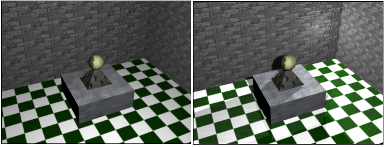

Iluminação é um aspecto que confere bastante beleza e realismo
numa imagem 3D. Inicialmente a aplicação 3D da DarkGdk começa
com uma luz default que pode ser manipulada mas não pode ser
apagada. Você pode colocar até seis luzes acesas
simultaneamente na sua aplicação.
01.2 Manipulando a luz default
O handle da luz default é zero (0).
dbHideLight(nLuz);
dbShowLight(nLuz);
A função dbHideLight() esconde a luz especificada (nLuz)
eliminando também seu efeito da cena.
dbShowLight(nLuz) mostra a luz especificada reativando
seus efeitos sobre a cena.
Exemplo:
// Liga e desliga a luz com sua influência
if (!strcmp(stecla, "1")) dbHideLight(0);
if (!strcmp(stecla, "2")) dbShowLight(0);
-------------------------------------------------------------------------------
dbSetAmbientLight(nValor);
Esta função define a intensidade da luz ambiente. nValor varia
de 0 a 100.
Exemplo:
// Define intensidade da luz
if (!strcmp(stecla, "3")) dbSetAmbientLight(100);
if (!strcmp(stecla, "4")) dbSetAmbientLight(20);
-------------------------------------------------------------------------------
dbColorAmbientLight(nCor);
Esta função define a cor da luz ambiente. A cor é dada
por um número inteiro.
Exemplo:
// Define as cores da luz ambiente
if (!strcmp(stecla, "5")) dbColorAmbientLight( 0xFF0000 ); // vermelho
if (!strcmp(stecla, "6")) dbColorAmbientLight( 0x00FF00 ); // verde
if (!strcmp(stecla, "7")) dbColorAmbientLight( 0x0000FF ); // azul
Veja agora o programa exemplo completo:

// luz01.cpp
// Esse programa mostra comandos básicos de luz
#include "DarkGDK.h"
#include "windows.h"
// Protótipo das funções
void initsys(); // inicializa o sistema
void teclado(); // Interpreta o teclado
void texturizar(); // Texturiza a matrix
void menu(); // Mostrar comandos para controle de luz
// Flag ou bandeira para terminar a aplicação
int terminar = 0;
// ----------------------------------------------------------------------------
void DarkGDK ( void ) {
// Começo da aplicação DarkGdk
// Carrega e texturiza um modelo 3D
dbSetDir ("c:\\gameprog\\gdkmedia\\Modelos\\German");
dbLoadImage ("german.dds",2);
dbLoadObject ("H-German-Idle.x",1);
dbTextureObject (1,2);
// Inicializa o ambiente gráfico
initsys();
// Prepara o terreno
dbLoadImage ("c:\\gameprog\\gdkmedia\\bitmap\\textura2x2.bmp",1);
dbMakeMatrix (1,2000,10000,10,50);
dbPrepareMatrixTexture (1,1,2,2);
texturizar();
dbSyncOn();
// Ajusta escala do objeto
dbScaleObject (1,12000,12000,12000);
// Ajusta câmera e posiciona objeto na cena
dbPositionCamera (1005, 475, -600);
dbPositionObject (1, 970, 300, -185);
// Looping principal
while ( LoopGDK ( ) ) {
if (terminar == 0) teclado();
dbSync ( );
if (terminar == 1)
{
dbDeleteImage (1); dbDeleteMatrix (1);
dbDeleteObject (1);
return;
} // endif
} // fim do while
return;
} // fim da função: DarkGDK
// ----------------------------------------------------------------------------
void initsys() {
// Esta função inicializa o sistema
dbSyncOn( );
dbSetWindowTitle("luz01.cpp");
dbDisableEscapeKey();
dbSyncRate(60);
} // initsys().fim
// ----------------------------------------------------------------------------
// texturizar() - Aplica aleatóriamente a textura na matrix
void texturizar() {
int linha, coluna;
for (coluna = 0; coluna < 10; coluna++)
{
for (linha = 0; linha < 50; linha++)
{
int tile = dbRnd(4) + 1;
dbSetMatrixTile (1, coluna, linha, tile);
} // linha
} //coluna
dbUpdateMatrix (1);
} // texturizar().fim
// ----------------------------------------------------------------------------
// teclado() - Lê o teclado e executa comandos do usuário
void teclado() {
// Lê o teclado
char *stecla="??";
stecla = dbInKey();
if (dbEscapeKey()) terminar = 1;
// Liga e desliga a luz com sua influência
if (!strcmp(stecla, "1")) dbHideLight(0);
if (!strcmp(stecla, "2")) dbShowLight(0);
// Define intensidade da luz
if (!strcmp(stecla, "3")) dbSetAmbientLight(100);
if (!strcmp(stecla, "4")) dbSetAmbientLight(20);
// Define as cores da luz ambiente
if (!strcmp(stecla, "5")) dbColorAmbientLight( 0xFF0000 );
if (!strcmp(stecla, "6")) dbColorAmbientLight( 0x00FF00 );
if (!strcmp(stecla, "7")) dbColorAmbientLight( 0x0000FF );
// Resseta o teclado
strcpy(stecla,"??");
// Mostra informações de opções
menu();
} // teclado().fim
void menu(){
// Variáveis de trabalho para mostrar texto
int xpos = 10;
int ypos = 10;
int coluna = xpos;
int linha = ypos;
int espaco_entrelinhas = 20;
int ncx = 0;
// Nossa lista de opções
char *slista[] = {"1- dbHidelight(0)",
"2- dbShowLight(0)", "3- dbSetAmbientLight(100)",
"4- dbSetAmbientLight(20)",
"5- dbColorAmbientLight(0xFF0000) - vermelho",
"6- dbColorAmbientLight(0x00FF00) - verde",
"7- dbColorAmbientLight(0x0000FF) - azul)"} ;
// Mostre a lista
// dbInk (nAzul, nBranco);
for (ncx = 0; ncx < 7; ncx++) {
linha = ypos + ( ncx * espaco_entrelinhas );
dbText (coluna, linha, slista[ncx]);
} // fim do for(ncx)
} // menu().end